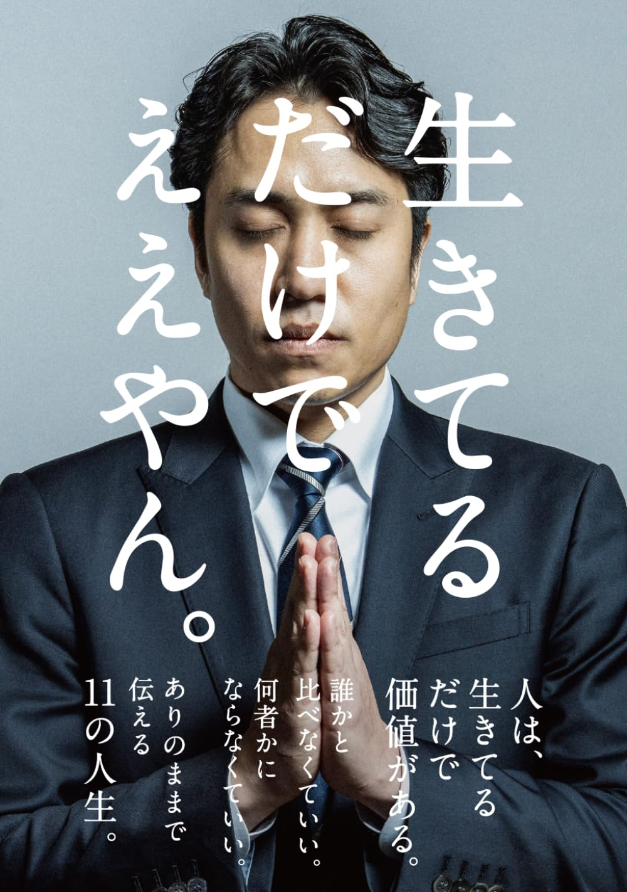
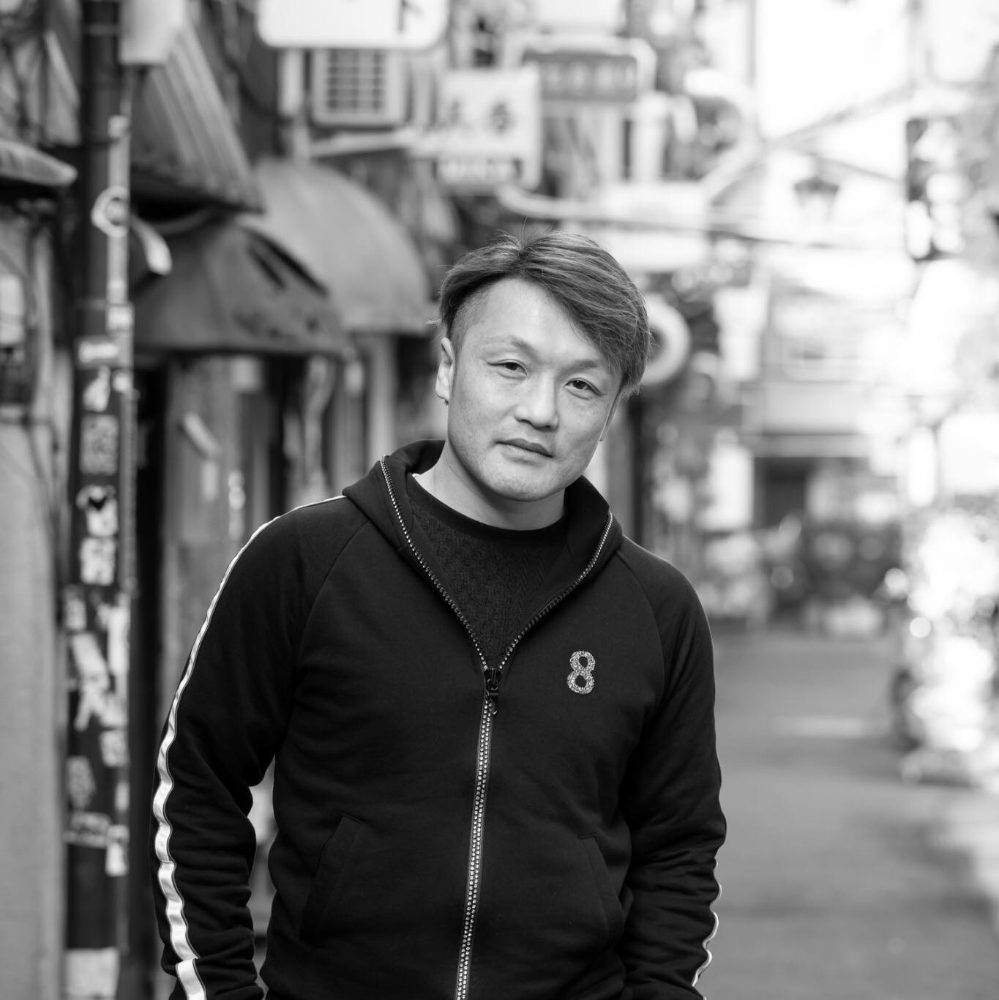
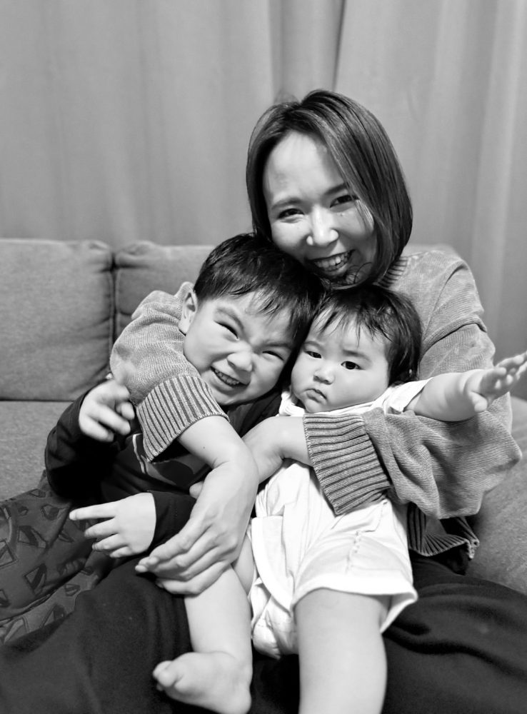
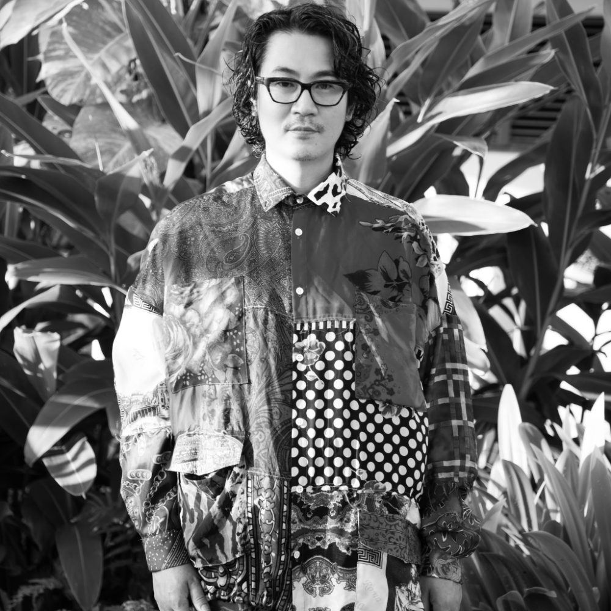
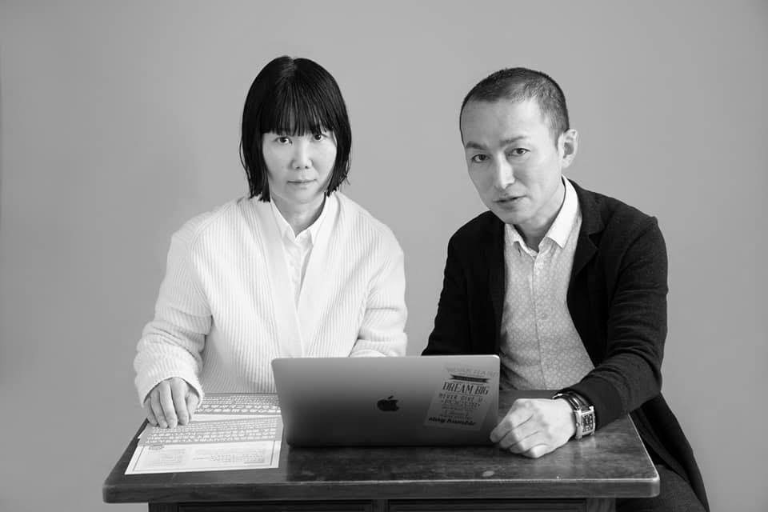
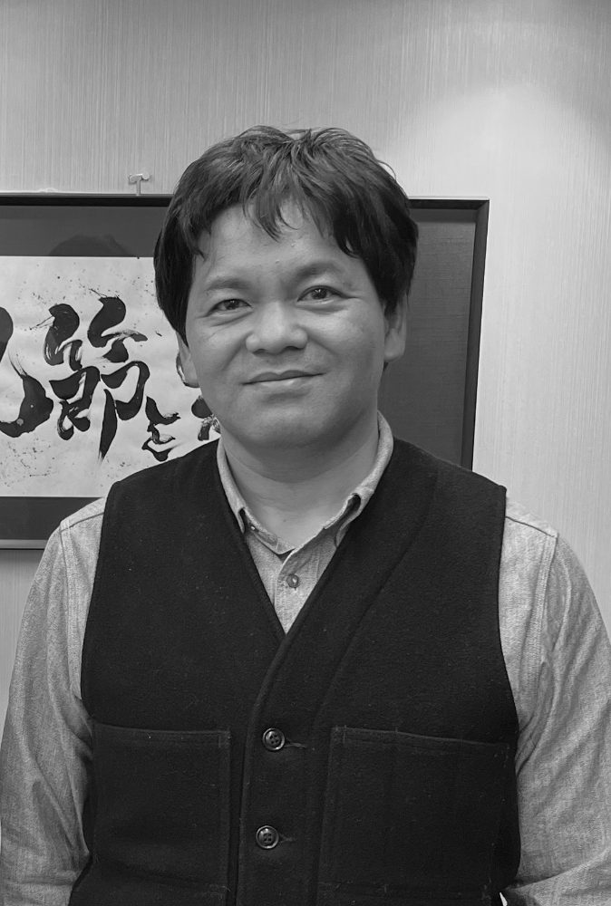
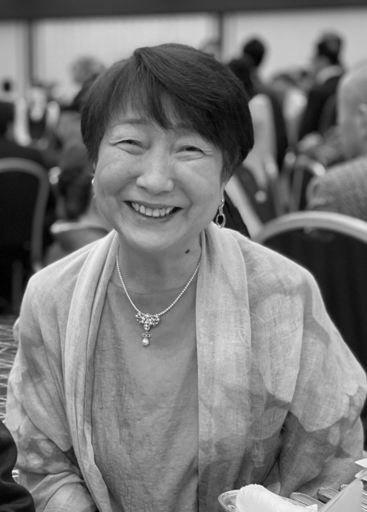
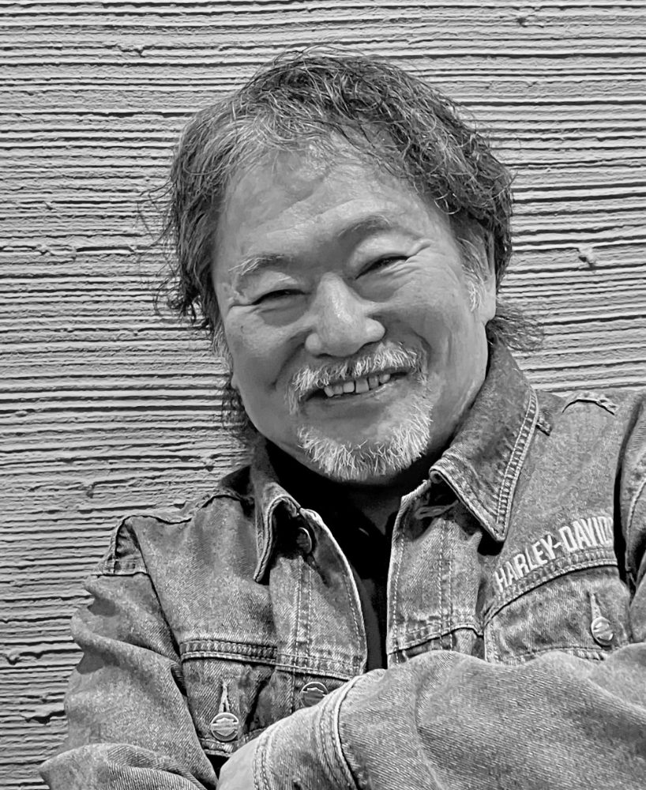

誰もが「生きているだけ」でものすごい力がある。

「生きているだけ」
それだけで
ものすごい力がある。
それは、これからの世界の「当たり前」になる。
誰もが「生きているだけ」でものすごい力がある。

中途半端な「グレー」でいったらあかん。 人は「真っ黒」でいったらツルツルの塊になって光り出す。
「うちの子は勉強ができない」なんて勘違いです。

微生物に触れると人間はヒトに還る

「できなかった体験」があるからこそ、 「できなくてもいい、でもできないままなわけがない」 と信じられる

「内なる声」と「外観」を 一致させていくことが僕の仕事です。

「障害当事者」だからできる境目のない福祉

その人の生まれ持った「純度」を上げる自立支援

「赤ちゃんから大学生まで一緒に活動する」 正解のないテーマに向き合うことで育まれる思いやりの心

「生きる」ということを純粋に楽しみたい。楽しみ続けたい。
赤ちゃんが生まれたとき、人はただその存在がここにあるというだけで喜び、祝福します。
泣き声をあげてこの世界にやってきたその小さな命を、家族はもちろん、時には他人でさえも「生まれてきてくれてよかった」と思う。
そこには、条件も評価もありません。
ただ、「ここに生きている」という事実だけが、祝福されているのです。
たとえどのような境遇で生まれてきたとしても、本来、生命というものはそれだけで尊く、喜ばしいものなのではないでしょうか。
命がここにある。それだけで十分に素晴らしい。
11人の著者のみなさんのお話から、命の尊さ、そしてそれは全てが等しくあるのだと改めて教えていただいたようでした。
生きていることを、ただ肯定する。
存在そのものを、丸ごと受け止める。
それがあるからこそ、人は安心して芽を出し、少しずつ自分の歩みを始めることができるのではないでしょうか。
まずは、生きていることをそのまま肯定すること。
もし自分でそれができないときは、できる人がそっと支えればいい。
「あなたは、生きているだけでええやん。」
そんな言葉が、誰かの心の土を少し柔らかくすることがあるかもしれません。
そしてその土から、また新しい芽が生まれていく。そんな世界が、少しずつ広がっていくことを心から祈っています。
MIROKU出版編集部
VOICES
今まで人生突っ走ってきたけど、40歳を迎えて、ふと人生を見つめ直すことが多くなった。生きるってなんだろうと立ち止まって考える。生きてたら、喜びも悲しみもある。落ちることも上がることもある。そのときに出会えた人もいる。いろんな著者さんの人生を読ませてもらって、人生、捉え方次第でおもろいやん。って思えました。ちょっと疲れたときに、山に散歩へ行って読んでます。
生きていくとは何か？著者の方々がどんな思いで生きているのか。表面上ではなく、本気でその気持ちが伝わる一冊でした。生きるため働くのではなく、生きることをどう使うか。そして誰の何に縛られてるのか。そう言ったことを考え直す良い機会になりました。
最初見た時は、「一体どんな本なのだろう？」と思いましたが、実際に読んでみるとインタビュー形式ですごく読みやすい本でした。それぞれの著者さんが背伸びしない等身大の言葉で語っているのが印象的で、「ああ、俺は俺をどんな風に感じてもいいんだ」と何だかホッとしました。生きづらさを感じていてもいなくても、心が軽くなる一冊です。
おかげさまで、3つのカテゴリーで
売れ筋1位を記録しました。
※ Amazon売れ筋ランキングに基づく実績です。